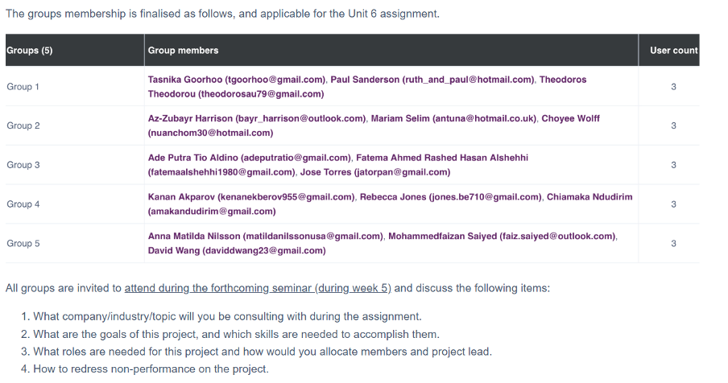
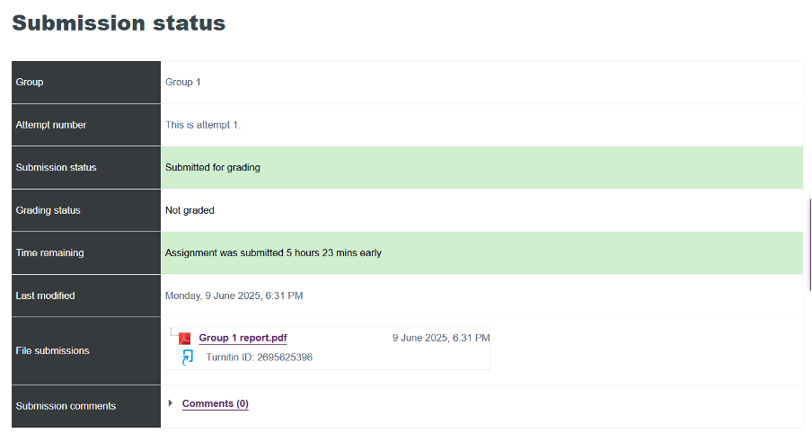
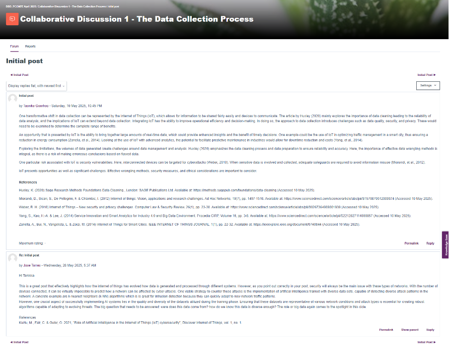
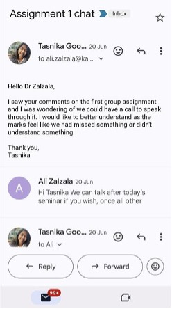

A reflective piece
Introduction
This piece is a reflection journey through my learning in Deciphering Big Data, highlighting the development of critical skills essential for success. The module entailed skills and techniques for data extraction, exploration, cleaning, working with datasets alongside fostering teamwork and collaboration (University of Essex, 2025). There were several instances where I encountered challenges and opportunities. I will aim to analyse my contributions to the team project, the skills I was able to develop and the plan to apply this in future.I work in the energy industry with numerous technical data; knowledge and skills such as data wrangling and understanding the regulatory aspects are important to ensure integrity and provide accurate insights. This was a personal motivation for undertaking the module.
Here, I make use of the Rolfe et al. (2001) model to convey my experiences and journey through this module through three questions: What? So what? Now what? From these insights, I was able to explore and note my learnings, growth and discover future opportunities (University of Wollongong Australia, 2023). My goal is to notarize and capture the journey I’ve been on through this module, note any challenges, growth, opportunities, skills obtained and provide light into how I plan to apply these insights.
Exploratory Areas
Technical skills
The module focused on developing skills in data wrangling, identifying security issues, working with datasets, and teamwork. I enhanced these skills by engaging with informative lecturecasts and exercises, like the data management pipeline, which offered a clear and structured method for data preparation. The second assignment allowed me to enhance my technical skills in critical analysis and writing a clear executive summary, while the third assignment challenged me to ensure my e-Portfolio met all requirements. Using Python offered a chance to learn new technical skills, which was initially daunting. I found that working through the exercises with patience, self-kindness, self-awareness, and self-regulation helped (Harvard DCE Professional & Executive Development, 2019).
Challenges
One challenge was working with python. This required personal time for self-learning and engaging with the textbook, making time management another challenge. Feelings of stress and overwhelm arose. However, I recognized that when learning something new, its normal to feel challenged as its part of the growth. Approaching it in smaller steps like a chapter at a time helped overcome these hurdles. Trying to balance other aspects of my life and ensuring sufficient engagement with the material added to the time management challenge. Attending the seminars live on Friday nights at 21h00 was testing, as fatigue was setting in. I decided to schedule daily time for the module and as far as possible start assignments well in advance (Auld, 2019). Changing my perspective on the challenges was vital in creating a growth mindset and helped foster adaptability and resilience and place healthier boundaries to prioritize (SkipPrichard, 2024).
Teamwork and collaboration
Teamwork was one of the outcomes in this module allowing practice on related skills like communication, roles and responsibilities, integrity and respect. During seminars, I engaged with fellow peers and the tutor to discuss the material and ask questions. The first assignment was a group effort (Error! Reference source not found.), helping develop and implement skills as a team member. My group’s primary communication method was WhatsApp, with scheduled calls to discuss the work and set milestones. Each member contributed and was respected. The positive result in the peer review submission and my group trusting me to submit the assignment, indicated the type of team member I was. The collaborative environment aided in my development, improving productivity and self-esteem (Laal & Ghodsi, 2012). The collaborative discussions were another testament to this, enriching my perspectives with peer responses. My group remains in contact, and I will attempt to keep it as a resource for supporting each other through other modules.
Evaluation of initial and final project


Problem-solving and critical thinking
Engaging with lecturecasts, readings, and my own research was essential for completing the assignments, especially the second one that required critical analysis. Considering perspectives and concepts regarding security around data for example needed me to think about the real-world problem in the assignment and explore potential problems that may arise and potential solutions. The image below shows my initiative to obtain feedback from the tutor on the first assignment to improve problem-solving and critical thinking. This highlighted the value in addressing challenges with an informed viewpoint. I plan to carry the learnings into other modules.
Professional skills
The module provided an opportunity to polish essential professional skills such as effective communication, succinct writing and others in the skills matrix table. These skills were important in the successful submission of the group assignment and will be valuable for future teamwork in my career (Sparks, et al., 2014). The word count for the assignment required me to articulate ideas succinctly, improving my confidence and ability to convey information effectively. Understanding the ethical and regulatory concepts for data handling made me conscientious about possible outcomes and insights gained on compliance and data protection reinforced the integrity I need to have as a professional working with data. I will ensure I maintain a high standard moving forward in my career.Subject and social application
The first two assignments allowed me to apply a real-world situation along with related data, reinforcing my understanding of the module’s principles in application. Working with the data and exploring the requirements for a retail store and the type of database best suited for business needs enabled me to put into practice critical thinking and problem-solving along with research to support informed decision-making in professional contexts.Leadership
I showed leadership within the group project, contributing ideas and ensuring the report appearance along with referencing was per guidelines. I was confident to ask questions during seminars and showed leadership by reaching out to the tutor to obtain deeper feedback. I was reminded that the importance of leadership is to lead by example and to foster collaboration and inclusivity, where everyone can share ideas. The peer review provided an opportunity to reflect on this and I recognize that effective leadership is also being open to feedback and constructive criticism, improving the learning curve.Future Application
I aim to apply the skills and knowledge obtained in my current job, future projects and career. I work with various data and applying the skills acquired to experiment and explore could provide deeper insights proving valuable to clients. I aim to take on projects within my work, applying the data wrangling concepts, researching the data security within my work and continuing improvement on the teamwork area. Making use of the e-Portfolio to document and track progress as well as showcase my development will be done.References
Auld, S. (2019) Time management skills that improve student learning. Available at: https://www.acc.edu.au/blog/time-management-skills-student-learning/#:~:text=You%20could%20start%20by%20estimating,make%20reading%20the%20schedule%20easier (Accessed 19 July 2025).Harvard DCE Professional & Executive Development. (2019) How to Improve Your Emotional Intelligence. Available at: https://professional.dce.harvard.edu/blog/how-to-improve-your-emotional-intelligence/ (Accessed 19 July 2025).
Laal, M. & Ghodsi, S. M. (2012) Benefits of collaborative learning. Procedia - Social and Behavioral Sciences, Volume 31, pp. 486-490. DOI: https://doi.org/10.1016/j.sbspro.2011.12.091.
SkipPrichard (2024) How to set boundaries at work (and why it’s important). Available at: https://skipprichard.com/how-to-set-boundaries-at-work-and-why-its-important/ (Accessed 19 July 2025).
Sparks, J. R., Liu, O. . L., Song, Y. & Brantley, W. (2014) Assessing Written Communication in Higher Education: Review and Recommendations for Next-Generation Assessment. ETS Research Report Series, 2014(2), pp. 1-52. DOI: https://doi.org/10.1002/ets2.12035.
University of Essex (2025) Deciphering Big Data April 2025. Available at: https://www.my-course.co.uk/course/view.php?id=13454 (Accessed 19 July 2025).
University of Wollongong Australia (2023) Model of reflection: The Rolfe et al. model. Available at: https://ltc.uow.edu.au/hub/article/rolfe-et-al-model (Accessed 19 July 2025).